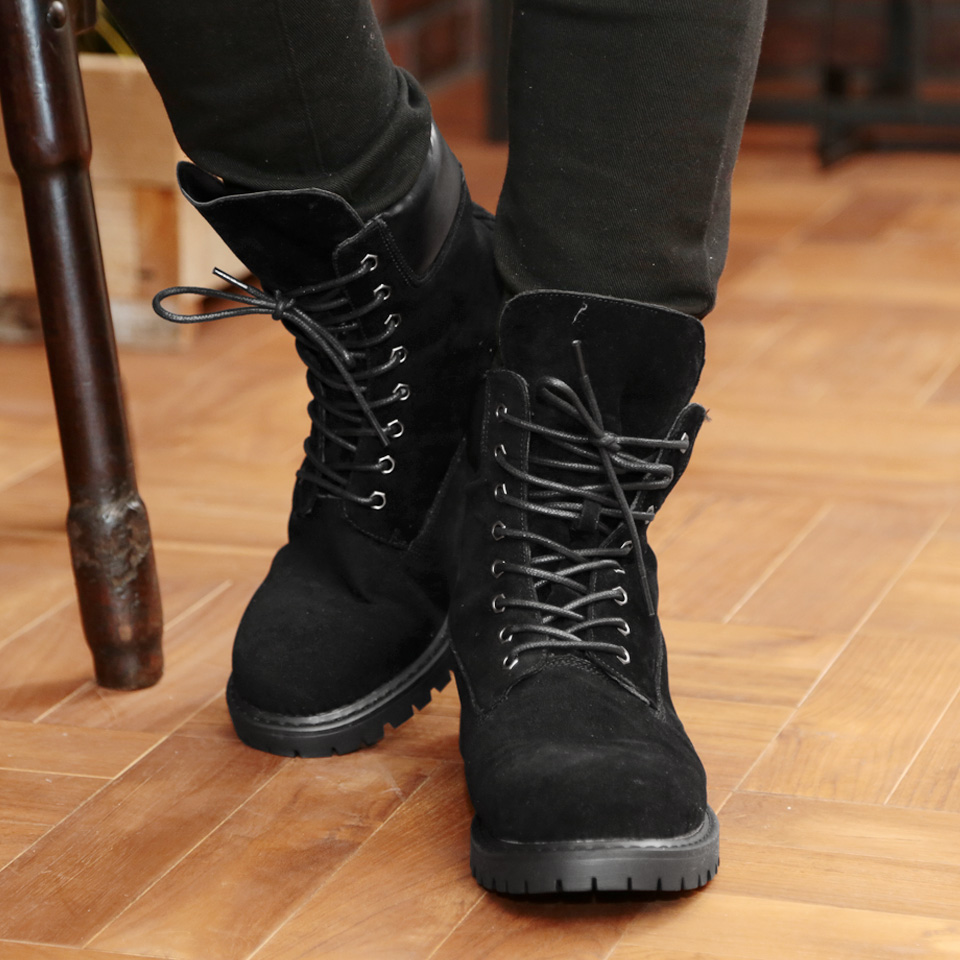
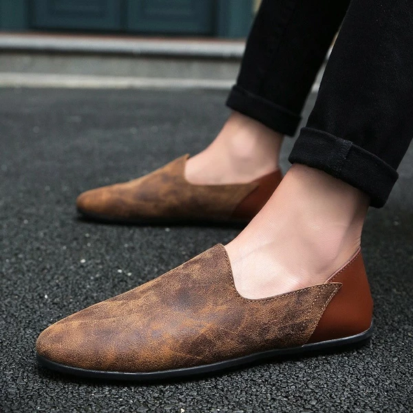
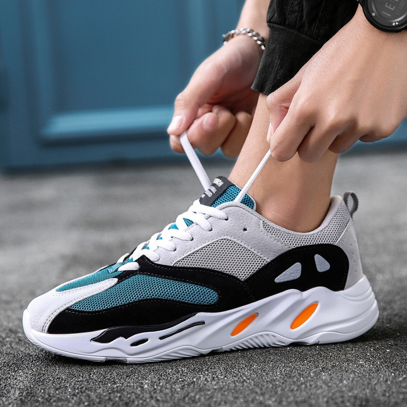
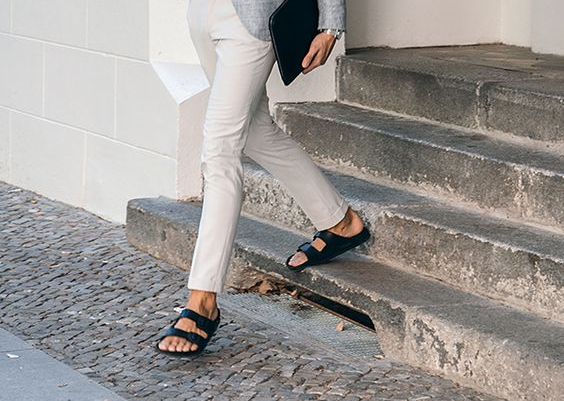
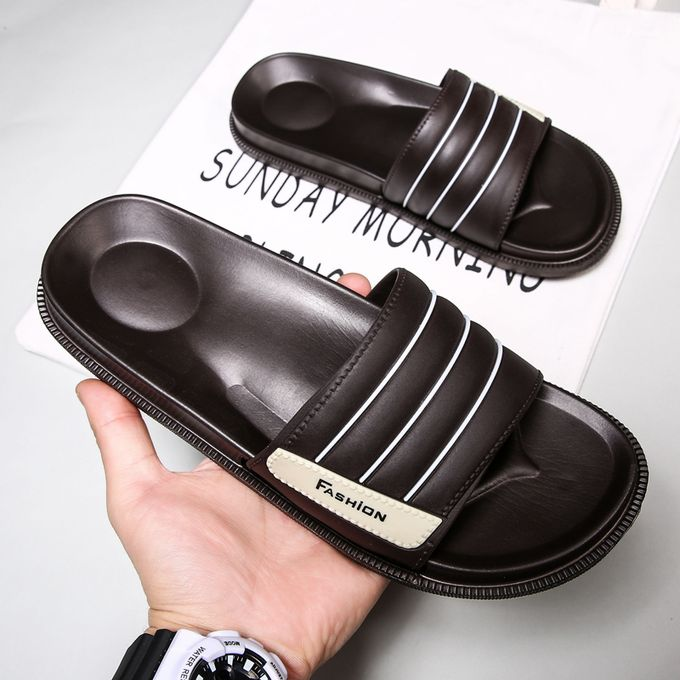
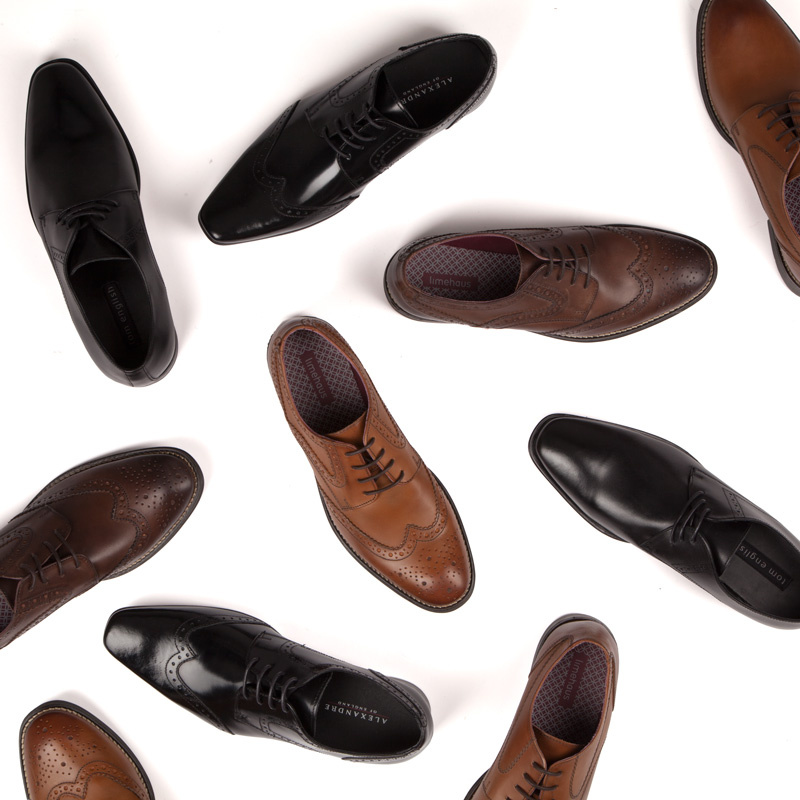

Men's Footwear
Spring is a sartorial roller coaster whether you reside in an environment with four seasons or somewhere that is prone to crazy weather (so everywhere). One minute you may be coping with the temperature of the sidewalk-cafe and the next minute you will be trapped in a downpour for three days. It's a time of year that makes it a little difficult to get ready as what you always put on has to have a dual function. And no choice is more important when it comes to getting dressed than the shoes you want to wear. That's why we're zooming in to give you thirty days of footwear guidance for your most relentless, un-soakable, and, of course, trendy spring ever. We've gathered from GQ's sites the best instances of the perfect footwear range, letting you know what to invest in, what to find on the cheap, and how to wear sneakers practically every day if you want to get your feet ready to appear better than ever before.
| Boots | Loafers | Sneakers | Sandals | Slippers | Others |
|---|---|---|---|---|---|
|  |  |  |  |  |  |